ТЕНЬ: Последний миллион
Семейная детективная игра для 3–6 человек. Час или полтора. Ведущего нет: игру ведёт телефон, а всё остальное — живое: ищем записки по квартире, торгуемся, блефуем.
Как победить Подготовка Роли Раунды Сделки и доверие Суд Подсчёт Тайное Числа
Как победить
Побеждает тот, у кого в конце больше всех денег: купюры на руках + 2000 ₽, если выполнена тайная миссия твоей роли.
- Миссия — это несколько заданий сразу. Не выполнено хоть одно — бонуса нет.
- Никто не выбывает. Даже если тебя раскусили, играешь до конца и зарабатываешь.
- У каждой роли есть задание «не разгадан»: на суде твою роль не должны угадать все остальные (впятером и вшестером — все, кроме одного). Так что прячь, кто ты. Врать о своей роли можно и нужно.
Подготовка (5 минут)
Нужны: телефон с игрой, кубик, ручка и листок каждому. Для антуража — живые деньги: любые игровые купюры из настольных игр или фишки для покера (около 20 000 ₽). Деньги считает и сам телефон.
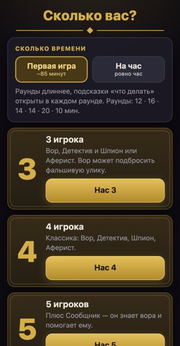
1. Сколько вас и сколько времени
«Первая игра» — раунды длиннее (~85 минут), подсказки «что делать» открыты всегда. «На час» — для тех, кто уже играл.
Потом имена, пролог (читаем вслух) и «Как играть». Один игрок держит кассу: выдаёт каждому по 1500 ₽.
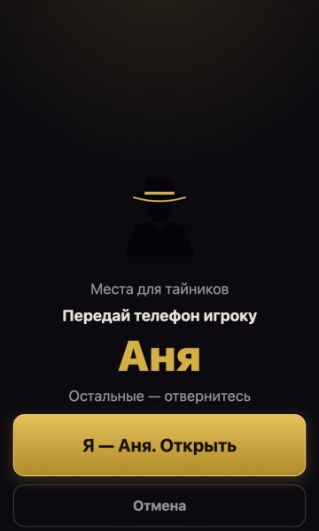
2. Тайники и роли
Двое тайно узнают, где спрятать бумажки «УЛИКА» и «ФРАГМЕНТ» (остальные ждут на кухне). Потом телефон раздаёт роли: «Передай телефон игроку…» → «Открыть» → прочитал → «Скрыть». Остальные отворачиваются.
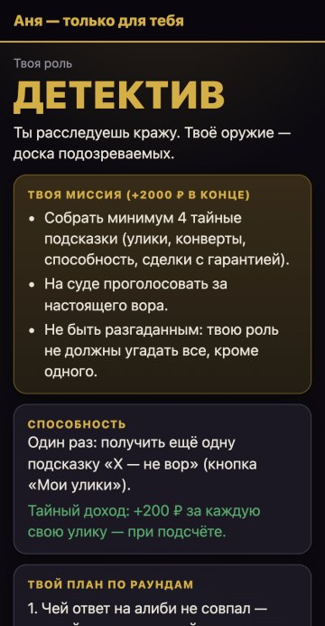
3. Твоя роль
Миссия, способность (один раз за игру), тайный доход и план по раундам. Посмотреть снова — кнопка «Мои улики» внизу: там твоя доска, всё, что ты узнал, и способность.
Роли
Втроём: Вор, Детектив и случайно Шпион или Аферист. Вчетвером: Вор, Детектив, Шпион, Аферист. Впятером + Сообщник. Вшестером + Нотариус.
| Роль | Миссия (+2000 ₽), плюс «не разгадан» | Способность | Тайный доход |
|---|---|---|---|
| Вор | Вскрыть сейф (+3000 ₽). Втроём и вчетвером с начала помнит одну цифру кода. | Дуэль кубиков (втроём — подбросить фальшивую улику) | — |
| Детектив | Собрать ≥ 4 тайные подсказки и на суде назвать настоящего вора | Ещё одна подсказка «X — не вор» | +200 ₽ за каждую свою улику |
| Шпион | Сделки с 2 разными игроками, денег ≥ 1700 ₽ (впятером/вшестером ≥ 1200) | Заглянуть в конверт до торгов | — |
| Аферист | Денег ≥ 2300 ₽ (впятером/вшестером ≥ 2000), выиграть конверт, хоть одна сделка | Отменить свой последний штраф (до 500 ₽) | +200 ₽ за сделку (до 3 раз) |
| Сообщник (5–6) | Вора не разгадали на суде, денег ≥ 1000 ₽. Знает вора, вор о нём — нет | Тайная почта: отправляет вору цифру кода | Доля из сейфа, если его вскрыл вор |
| Нотариус (6) | За игру ≥ 2 сделки с гарантией (чьи угодно), денег ≥ 1500 ₽, хоть одна своя сделка | Узнать, что продали в любой сделке с гарантией | Все 200 ₽ за чужие гарантии |
Сделка засчитывается в миссию, если в ней заплатили хотя бы 100 ₽. Тайные доходы копятся незаметно и выплачиваются только при подсчёте — иначе они выдали бы роль.
Шесть раундов
Каждый раунд: заставка с речью ведущего (читаем вслух) → событие-сюрприз → таймер стартует сам. Наверху экрана — ведущий: каждые 70 секунд он даёт новое задание кому-то из игроков.
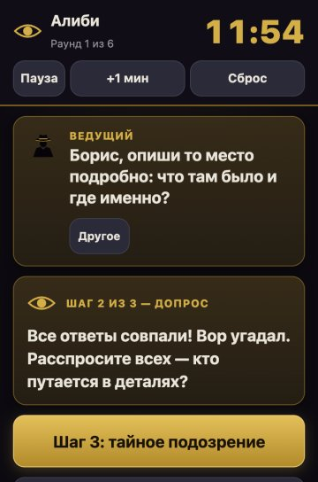
Экран раунда
Сверху таймер, ниже задание ведущего и шаг раунда — большая золотая кнопка. Внизу: Деньги (банк платит / игрок платит), Сделка, Мои улики, Ещё (дуэль, кубик, журнал, правила) и Дальше — она становится золотой, когда шаг раунда выполнен.
1. Алиби
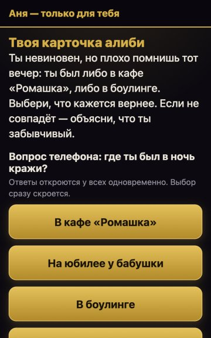
Каждый тайно читает, где был в ночь кражи, и тайно отвечает. Ответы открываются у всех сразу. Невиновные помнят точно. Вор знает только два варианта и угадывает. Один невиновный — «забывчивый», он тоже может ошибиться.
Не совпал — вор или забывчивый. Допрос по заданиям ведущего, потом каждый тайно отмечает, кого подозревает: угадал вора — +300 ₽ при подсчёте.
2. Улики
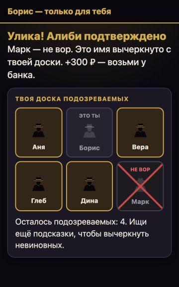
На экране загадка, ответ — место в квартире. Кто нашёл бумажку «УЛИКА» — жмёт своё имя: +300 ₽ и тайная подсказка «X — не вор».
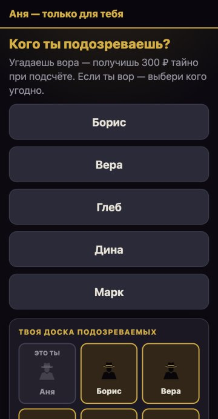
Доска подозреваемых
У каждого своя тайная доска. Каждая подсказка «X — не вор» зачёркивает одного. Остался один — это вор.
3. Чёрный рынок
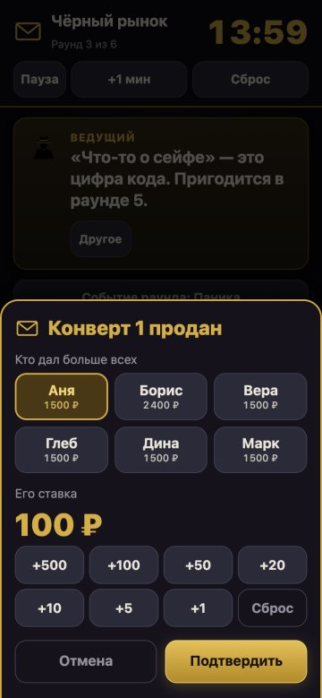
По конверту на игрока. На конверте — намёк («Пахнет деньгами», «Особая карта», «Что-то о сейфе», «Шепчет о воре»). Торг вслух от 100 ₽, кто дал больше — жмём его имя и ставку. Внутри сюрприз и всегда подсказка «X — не вор». Что внутри — видит только победитель.
Особые карты: «Дуэль», «Страховка» (следующий штраф заплати как все — телефон тайно вернёт при подсчёте), «Голос ×2» на суде.
4. Сделки
Продаём подсказки, цифры кода, голоса, союзы, обещания. Каждую сделку записываем кнопкой «Сделка», телефон объявляет её. Подробно — в разделе «Сделки и доверие».
5. Сейф
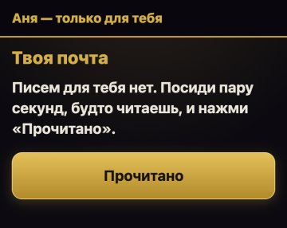
Впятером и вшестером раунд начинается с тайной почты: телефон идёт по кругу, каждый открывает «Твою почту» и жмёт «Прочитано». Вору приходит письмо «от неизвестного друга» с цифрой кода — это постарался сообщник. У остальных «писем нет». Экран у всех одинаковый.
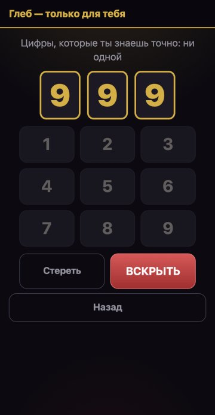
Цифра №1 — кубиком (у кого больше). Цифры №2 и №3 — по загадкам, как улики. Цифрами торгуют. Знаешь все три — «Вскрыть сейф»: +3000 ₽. Попытка одна на всю игру, неверный код — сигнализация и штраф 300 ₽.
6. Суд «Кто есть кто»
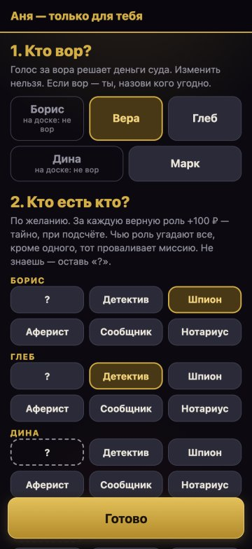
Сначала речи — по 30 секунд каждому, таймер сам переключает. Потом телефон один раз идёт по кругу (~40 секунд на человека, таймер раунда ждёт):
- Кто вор? — обязательно. Если вор — ты, назови кого угодно.
- Кто есть кто? — по желанию поставь роли остальным. Каждую роль — только одному. «?» — не знаю.
Большинство угадало вора — он платит детективу. Каждая верная роль — +100 ₽. Чью роль угадали все (впятером и вшестером — все, кроме одного), тот проваливает миссию. Всё это открывается только при подсчёте.
Сделки и доверие
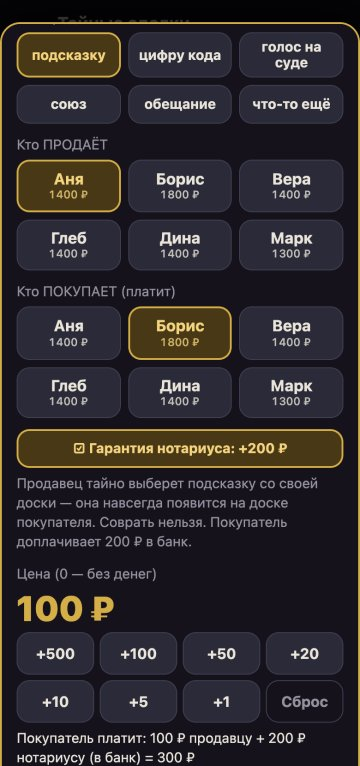
Подсказку или цифру кода можно продать двумя способами:
- Шёпотом на ухо — дёшево, но продавец может соврать, и на доску ничего не попадёт.
- С гарантией нотариуса — покупатель доплачивает 200 ₽ «в банк» (вшестером — тайно нотариусу), и телефон сам передаёт правду. Соврать нельзя.
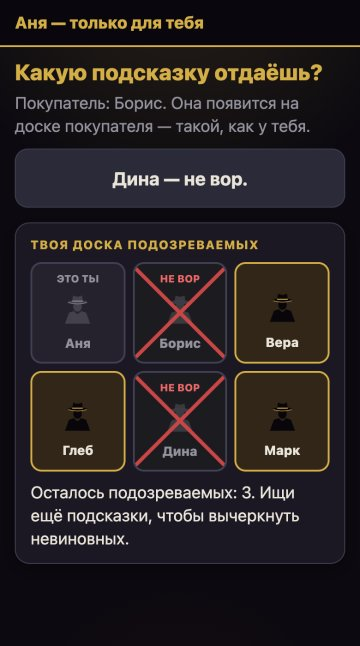
При гарантии продавец тайно, на своём экране выбирает, что отдаёт (или отменяет сделку). Покупатель тайно видит, что получил, и это навсегда ложится на его доску.
Кто прятал бумажки, может продавать знание о тайниках — и врать. Вся игра на доверии: кому верить, решаешь ты.
Подсчёт
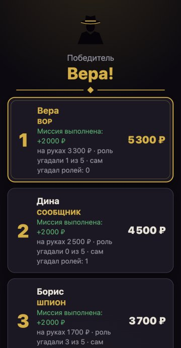
Сначала телефон объявляет приговор суда и выдаёт всё тайное: доходы ролей, долю сообщника, +300 ₽ за подозрение, +100 ₽ за угаданные роли, страховку. Передайте купюры. Потом «Раскрыть роли и итог»: у кого больше всех — победитель. Ничья — у кого больше улик, потом кубик.
Главное правило: тайное — только на тайном экране
- «Передай телефон игроку…» — остальные отворачиваются. Открыл, прочитал, нажал «Скрыть».
- Не подглядывать и не показывать свой экран. Говорить можно что угодно — блефовать разрешено.
- Только игровые деньги. Нельзя платить больше, чем есть на руках. Спор — решает кубик («Ещё» → «Кубик»).
- Дуэль: «Ещё» → «Дуэль». Право на дуэль телефон проверяет тайно, передумать можно всегда. Победитель получает 500 ₽.
Числа по составам
| 3 | 4 | 5 | 6 | |
|---|---|---|---|---|
| Конвертов на аукционе | 3 | 4 | 5 | 6 |
| Вор с начала помнит цифру | да | да | нет, пишет сообщник | нет, пишет сообщник |
| Пойманный вор платит детективу | 1000 | 1000 | 1500 | 1500 |
| Непойманный вор получает от банка | 1000 | 1000 | 0 | 0 |
| «Разгадан» — роль назвали | оба | все трое | 3 из 4 | 4 из 5 |
| Доля сообщника из сейфа | — | — | 1100 | 1000 |
Баланс ролей проверен симуляцией: 3000 партий на каждый состав, у каждой роли примерно равный шанс победить.